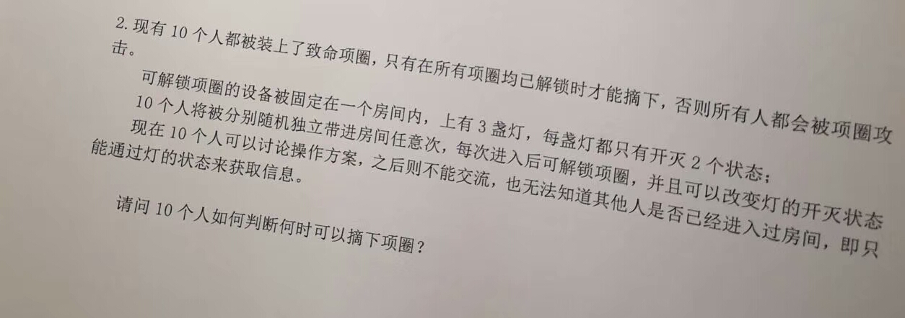

这是题目：

10 个人不能见面，只靠 3 盏灯交换信息，如何协调配合呢？
这里加上一些解释：
1 0 3 3 2 5 4，都以概率为 1 在整个无限长的进入房间的序列中出现。比如，每次独立等可能随机挑选一个人进入是符合这个要求的这类似于 10 个协助式多任务的线程（在自己自愿 yield 之前不会被打断），只共享 3 bit 的内存，如何知道所有其它线程都已经开始运行？
jinzihao 受到这个问题的启发，在他的文章《用3盏灯实现群聊 —— 一道趣味题和一个协议设计》中，描述了一种可以使用这 3 个灯进行任意通讯的方法。
另外，有人[citation needed]也提出了一种可以使用只 2 个灯就可以解决原来的“项圈问题”的解法。我们在这里不给出这种解法，以便读者可以思考原问题。
但是这让我们想到，有没有可能可以只用两个灯也实现任意多方通讯呢？
理论分析和随机试验表明，这是可行的！
以下是剧透
这里我们采用了一种与 jinzihao 不同的思路。我们让每个人轮流控制消息的传输，并在此过程中发送一个自己希望广播的 bit。在此基础上，我们确认所有人都收到这个 bit 后，安全地将传输控制权转交给下一个人。
当然，由于初始状态不知道的不确定性，我们需要一个“同步”的步骤。在这个设计中，我们由 0 号作为 host 为其他 guest 控制同步过程，不仅了解到 guest 的情况，还要确保 guest 也能接收到 host 的消息，让所有人都知道同步顺利完成。事实上，这个同步过程的完成即是原问题的一种解法，所以这些人可以把项圈摘下来继续聊天。
这样，我们实现了一个所有人轮流发送 bit 流的“物理层”协议。在此基础上实现任意通讯，相信并不困难。
最终协议设计如下：
sync_guest 和 sync_guest）sender 和 receiver）y = not x，表示等待下一循环的发信者接管发信使用 Python 语言的 generator 功能，我们可以很方便的实现类似 coroutine 的功能。这样，我们就不需要设计繁琐的状态机来完成工作。
完整的代码可以下载：lampcomms.py。
代码的开头有一些配置参数，可以调整实验。
import random
### 配置参数
num_actors = 5
max_steps = 2000
random.seed(12345)
logging = True
### 全局状态
state = random.choice(['00', '01', '10', '11'])
step = 0
### 传输数据记录
sent = ['' for i in range(num_actors)]
recv = [['' for j in range(num_actors)] for i in range(num_actors)]
def log_sent(src, bit):
sent[src] += str(bit)
def log_recv(src, dest, bit):
recv[dest][src] += str(bit)
### 主程序
def actor(me):
global state, step
def log(str):
if logging:
print('{:6} | {:3}: {}'.format(step, me, str))
def next_actor(x):
return (x + 1) % num_actors
def wait_ack(msg, ack):
global state
state = msg
count = 1
while count < num_actors:
yield
if state == ack:
count += 1
state = msg
def wait_until(target):
if type(target) == str:
target = [target]
while state not in target:
yield
def sync_host():
log('+ sync: begin counting')
yield from wait_ack(msg = '10', ack = '11')
log('+ sync: master done')
def sync_guest():
global state
yield from wait_until(['10', '01'])
state = '00'
log(' sync: first ack')
yield from wait_until('10')
state = '11'
log(' sync: second ack')
def sender():
global state
state = '01'
yield from wait_ack(msg = '01', ack = '00')
log('+ takeover: done')
bit = random.choice([0, 1])
log('+ send: sending {}'.format(bit))
msg = '1' + str(bit)
yield from wait_ack(msg = msg, ack = '00')
log('+ send: done')
log_sent(src = me, bit = bit)
state = '1' + str(1 - bit)
def receiver():
global state
yield from wait_until('01')
state = '00'
log(' takeover: ack')
yield from wait_until(['10', '11'])
bit = int(state[1])
log(' recv: ack, bit {} from {}'.format(bit, current))
log_recv(src = current, dest = me, bit = bit)
state = '00'
yield
if me == next_actor(current):
neg_msg = '1' + str(1 - bit)
yield from wait_until(neg_msg)
log('+ taking over transmission')
if me == 0:
yield from sync_host()
else:
yield from sync_guest()
current = 0
while True:
if me == current:
yield from sender()
else:
yield from receiver()
current = next_actor(current)
actors = [actor(i) for i in range(num_actors)]
for i in range(max_steps):
step = i
last_state = state
actor_num = random.randrange(num_actors)
next(actors[actor_num])
print('')
print('Transmission check')
print('')
for src in range(num_actors):
src_sent = sent[src]
print('{:3}| {}'.format(src, src_sent))
for dest in range(num_actors):
if src != dest:
dest_recv = recv[dest][src]
# 这里，有可能不是所有人都接收到了最后一个 bit 就终止了
# 或者有可能所有人都接收到了最后一个 bit，但是发信者还不知道
# 因此接收到的可能比实际完成发送的多一个 bit
# won't fix
ok = '(Ok!)' if dest_recv[:len(src_sent)] == src_sent else '(Not ok!)'
print(' > {:3}: {} {}'.format(dest, dest_recv, ok))
print('')
### 传输统计
total_bits = sum(map(len, sent))
print('Transmission statistics:')
print(' {} actors, {} bits, {} steps'.format(num_actors, total_bits, max_steps))
print(' {} bits per 1k steps'.format(1000 * total_bits / max_steps))